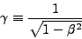

SPACETIME is a computer program designed to help you understand and develop an intuition for the laws of special relativity. You can use SPACETIME to analyze and solve exercises and take-home projects, or to explore on your own.
SPACETIME depicts one-dimensional relativistic phenomena with two separate but related displays: Highway and Spacetime Diagram. Highway shows a snapshot of a superhighway on which different objects in different lanes move at different speeds. Spacetime Diagram shows a plot of position versus time that displays the locations of events and the trajectories of objects in spacetime. Because the two displays share data, you can view both displays at once using a split screen or work with whichever mode is more convenient.
Although the displays assume an acquaintance with relativity, they are designed to be mostly self-explanatory to operate. You will be able to use the program after a few minutes of practice, with occasional consultation of this help.
The large blank area in the upper left part of the program window represents a superhighway running from left to right across the screen. Different lanes on the Highway are for objects moving at different speeds. Objects lying on the horizontal line through the middle of the highway are on the center strip of the Highway and do not move. Objects above the center move to the right; the farther above the center, the faster they move. Objects in the very top lane move to the right with the speed of light; only light flashes can occupy this lane.
Objects below the center of the screen move to the left; the farther below the center, the faster they move. Objects in the very bottom lane move to the left with the speed of light; only light flashes can occupy this lane.
The Highway convention is British, but modified; vehicles drive on the left side, but slow lanes are near the center strip, fast lanes near the edge of the road.
To understand what appears on the Highway, think of a movie of all the objects traveling along the Highway. At any given instant, you are looking at a single still of the movie. As you change the time, you change the movie still. You are going to learn how to make such movies and how to step time forward and backward through the stills of the movie.
A vertical ruler, at the left of the display shows &beta, the velocity as a fraction of the speed of light: &beta = v/c. The range of &beta extends from +1 at the top (light moving to the right), through 0 at the center, to -1 at the bottom (light moving to the left). Notice that this is not a linear scale; equal vertical lane separations do not correspond to equal changes in &beta. This is done so that more of the interesting velocities near &beta = 1 can fit on the screen.
There is a scale on the screen labeled &gamma next to the beta scale. It gives the value of the time stretch factor.

Moving clocks run slow by the factor &gamma and moving rods are contracted by factor &gamma along their direction of motion. The factor &gamma, which is always positive, ranges from the value infinity at the top of the scale, through the value 1 at the center, to the value infinity again at the bottom of the screen.
The second important display in SPACETIME is the Spacetime Diagram.
Spacetime Diagram provides an alternative way to display events and positions of objects. In this coordinate system the horizontal axis of Spacetime Diagram represents the position of an event or object, and the vertical axis represents the time at which the event occurs. The big advantage of Spacetime Diagram is that you can view on one screen events that occur at different times as well as at different places.
A worldline traces out the trajectory of an object through spacetime. Each event (each point on a worldline) on a worldline corresponds to the position of an object at the time the object was there. Objects in the Highway appear as worldlines in the Spacetime Diagram.
The thick blue line across the middle of the Spacetime diagram represents a line of simultaneity for the current time t in the current reference frame. All events that occur at the current time t in this frame will lie on this blue line. The value of the current time is displayed at the lower left of the program window.
Please note: Everybody errs. It can happen that when you construct a scenario, you make a mistake and drag an object you didn't intend to or do anything that you regret. When something like this happens, just press CTRL-Z to return to the previous state of the program. Alternatively use menu EDIT and choose UNDO.
After you open the program you should see a basic scenario with one clock called C1 positioned in the center of the Highway.
Now call this clock "Earth". To do it, double click on the cell containing "C1" in the first row and the first column of the Object Table. Then use your keyboard to enter the name Earth instead of C1. Press the Enter key when finished.
You should see the label of the clock changed both in Highway display and the Spacetime Diagram display. You can also add short notes for this object. To add the notes use the Object Table. You need to access the table cell in the column NOTES. Originally it is not displayed since it doesn't fit to the width of the Object Table. Use the scroll bar at the bottom of the table to access it. It contains the text "Clock 1":
To replace it, type in for example: "This is the Earth." Now use the bottom scrollbar to show the first columns of the Object Table again. Now when you put the mouse pointer either on the clock in the Highway or on its worldline in the spacetime diagram, the information about the object is displayed at the bottom of the program window:
Place your mouse pointer at the position you wish it should appear (zero velocity lane at position 4 light years from Earth). Right-click (CTRL-click on Mac) to call up a pop-up window. Choose menu CREATE and in the sub menu choose CLOCK.
This will place the clock to the highway. If you were not precise in placing the clock just drag it to a correct position or use the Object Table to enter the desired position and beta or gamma. The following screenshot shows the second clock placed correctly to position 4, but its velocity beta is not 0 but 0.4166 instead.
You can edit the value of beta in the object table and then press ENTER.
Use the Object Table to give the clock the name "Alpha" and give it the note "This is the star that the astronaut travels to."
Create the third clock with position 0 and such a velocity that its gamma factor is 2. Name it "Ship" and give it a note "This is the ship. Astronaut is inside."
Put the cursor over the rocket ship in the highway and right-click (CTRL-click on Mac) to call up the pop-up menu. Then choose SET BIRTH HERE AND NOW.
This creates event E1. It will be the beginning of the Ship worldline in the Spacetime Diagram. Use the Event Table (you can access it by clicking on its TAB above the table) to give it the name "Departure" and a note "Departure from Earth".
The turning event lies at the intersection of the worldline of the ship and the worldline of Alpha Centauri in the Spacetime Diagram display. The intersection is not displayed in the Spacetime Diagram, since the two lines meet above the upper border of the display.
We'll have to advance time forward so as to see the intersection of the two worldlines. To do it, use one of the following two methods:
Now, when you can see the intersection of the worldlines in the Spacetime diagram, place your mouse pointer on that intersection, so that both worldlines are highlighted. Then call up a pop-up menu and choose CONSTRUCT and EVENT. The dot representing the turning event will be placed in the intersection of the two worldlines.
Advance the time forward until the time of the created event. You should see a vertical red line in the Highway display representing the event.
The computer automatically assigned the name E2 to this event when it was created. Now give the note "Turning at Alpha" to this event. Don't give a name to it since this will be a velocity change event and the program names those events in its own way (it numbers them).
Call up the pop-up menu on the Ship in the Highway at the moment of event E2. Choose PROGRAM in the menu. The clock representing the ship will turn green. The green color signals the fact that the clock is being programmed. Then drag the ship to a bottom lane with gamma=2 so that it can return to Earth. Instead of dragging you can type in its new velocity or gamma in the Object Table.
If you are finished, click anywhere to the highway. The ship will become black again.
Please notice: When you drag a clock which is NOT green (that is a clock that is not currently being programmed) the computer will assume you want to redefine its position and velocity afresh. It will delete all velocity change events belonging to this clock that might have been programmed to it before. Its worldline will be a straight line again!
Advance time forward until you see the intersection of the worldlines of the ship and the Earth. Create an event in this intersection. It will be named E3 by the program. Now rename that event to "Arrival". Give it a note "The ship arrives back to Earth." Then advance time to that event. You should see a vertical red line in the Highway representing that event. Call up the pop-up menu on the ship and choose SET TERMINATION HERE AND NOW. This will terminate the worldline of the ship.
You should see something like this:
You can see that astronaut has aged half as much as the inhabitants of Earth and Alpha.
There are two events on the worldline of Earth which are quite special. The first of them, call it S1, happens at Earth simultaneously with the turning event at Alpha, as measured in the frame of outbound rocket. The second, call it S2, happens at Earth and is simultaneous with the turning event at Alpha, as measured in the frame of inbound rocket. We will create them now.
Go back in time to time t=4.30. Call up the pop-up on the empty area of the Spacetime Diagram and choose TIME and SET T = ... Then insert 4.30 to the window which will appear and click OK. Then call up the pop-up menu on the Ship in the Highway and choose JUMP TO THIS OBJECT. You should see something like this after doing that:
Now advance the time until the event Ship-DeltaBeta1 happens. This will be signalled by a vertical green line in the Highway. Then place your mouse pointer on the intersection of worldline of Earth with the horizontal blue line of simultaneity. Call up the pop-up menu and choose CONSTRUCT and EVENT. Call this event S1 and give it note "Event simultaneous with turning event in the frame of outgoing rocket."
Now call up a pop-up on an empty area of the Highway. Choose TRANSFORM and TO ORIGINAL FRAME. Now set time to 4.80. Then call up the pop-up menu on the Ship in the Highway and choose JUMP TO THIS OBJECT. If everything disappears and only little black triangles are visible on the right of the Highway, don't worry. It is OK. The triangles signal that there are some objects to the right that could not be displayed. You have to shift the display to see them.
Click anywhere to the Spacetime Diagram, hold down the SHIFT key and press repeatedly the LEFT arrow key until the objects are visible. Now step back in time until the event Ship-DeltaBeta1 happens. This will be again signalled by a vertical green line in the Highway. Then place your mouse pointer on the intersection of worldline of Earth with the horizontal blue line of simultaneity. Call up the pop-up menu and choose CONSTRUCT and EVENT. Call this event S2 and give it note "Event simultaneous with turning event in the frame of incoming rocket."
Use the Comments TAB to add any textual comment to the scenario. Use SAVE menu to save it.
CONGRATULATIONS! You have created your first scenario with Spacetime.
To step the time forward or back just place your mouse cursor over the SPACETIME DIAGRAM and roll your mouse wheel forward or backward. Alternatively, use the UP and DOWN keyboard arrows. Be careful here! The arrows won't work unless the Spacetime Diagram is selected i.e. ready to react to the keyboard. To select it just click anywhere to its area. The thin gray border around the Spacetime Diagram area will indicate that it is selected.
Right-click (CTRL-CLICK on Mac) anywhere in the Highway, but not on top of any existing object. You will see a context pop-up menu. Follow the menu CREATE and choose one of the objects (clock or light flash).
If you want to adjust the position of the newly created object (or any object) you can either drag it to a desired position or use the Object Table and type in the position or the velocity there.
Be careful here: If the object you are going to adjust had been programmed (see programming objects) its program will be deleted.
Right-click (CTRL-CLICK on Mac) on the object to be deleted in the Highway or on its worldline in the Spacetime diagram and select DELETE from the pop-up menu. Alternatively you can right-click (CTRL-CLICK on Mac) on the corresponding entry in the Object Table and choose DELETE.
There are three types of events in the Spacetime diagram:
To create an event at an intersection of two worldlines, place your mouse pointer on the intersection. Both worldlines will be highlighted. Then right-click (CTRL-click on Mac) and choose EVENT from the CREATE menu in the pop-up. Alternatively right-click (CTRL-click on Mac) on the first worldline and choose menu CONSTRUCT and then the item ALL INTERSECTIONS WITH... Then click on the second worldline. This will create all intersections of the two worldlines (the two worldlines can have more than one intersection since both can have many kinks).
To create an event placed on the worldline, place your mouse cursor on the worldline and call up the pop-up menu. Choose menu CREATE and then EVENT. If you call up the pop-up menu on the blue line of simultaneity the new event will be placed in such a way that it happens at the current time.
To create a free event, just call up the pop-up menu anywhere but on a worldline or an event. After being created the free event can be dragged to a new position or its position can be typed in the Event Table.
To delete an event, just call up the pop-up menu on that event and choose DELETE. Alternatively you can right-click (CTRL-CLICK on Mac) on the corresponding entry in the Event Table and choose DELETE.
You can connect any two events by a line in the Spacetime Diagram. We call it interval. To do it, call up a pop-up menu on one event and choose CONSTRUCT and SPACETIME INTERVAL TO ... Then click on another event. The constructed line displays the type of interval (S - for spacelike, T - for timelike, and L - for lightlike) along with its numerical value. Moreover it displays the components Delta x and Delta t of the interval.
Thus interval can be used to measure spatial and temporal separations between pairs of events. You can drag any of the defining events. The interval will change accordingly.
The interval can be deleted by calling up the pop-up menu DELETE on it.
To construct an invariant hyperbola for an event, call up the pop-up menu on that event in the Spacetime Diagram and choose CONSTRUCT and INVARIANT HYPERBOLA. If you now drag the defining event, the hyperbola will change accordingly.
The hyperbola can be deleted by calling up the pop-up menu DELETE on it (but not on the event through which it passes, since that would delete that event).
To construct a light cone for an event, call up the pop-up menu on that event in the Spacetime Diagram and choose CONSTRUCT and LIGHT CONE. If you now drag the defining event, the light cone will move accordingly.
The light cone can be deleted by calling up the pop-up menu DELETE on it (but not on the event through which it passes, since that would delete that event).
Right-click (CTRL-CLICK on Mac) on any object in the Highway and choose JUMP TO THIS OBJECT from the pop-up menu. This will transform to the rest frame of this object. Alternatively this can be done by right-clicking (CTRL-clicking on Mac) the corresponding row in the Object Table.
To transform up means to transform to a frame moving with positive relative velocity 0.05 with respect to a current frame. To transform down means to transform to a frame moving with negative relative velocity -0.05 with respect to a current frame.
To transform up or down place your mouse cursor over the HIGHWAY and roll your mouse wheel forward or backward. Alternatively, click anywhere to the area of the Highway to ensure that it is selected (this will be signalled by a thin gray border around the Highway display), hold down the SHIFT-key and while holding it press the UP or DOWN keyboard arrow key.
To shift the screen in horizontal direction just click anywhere to the blank area of the Highway or the Spacetime Diagram, hold down the mouse button, and drag it to a new desired position. Alternatively, ensure that the Highway or Spacetime Diagram is selected, and press repeatedly the LEFT or RIGHT keyboard arrow key.
Both clocks and flashes can change their velocity in the Spacetime program (Yes! Even the light flash moving always at the same speed can change its direction of motion and therefore its velocity). But you have to tell them when and how to do it. In other words you have to program them.
To program an object, call up the pop-up menu on it in the Highway and choose PROGRAM. Then drag the object up or down along the green velocity change event line to set its new velocity. Instead of dragging, you can use Object Table to type in the new velocity value. The object will be drawn in green color to signalize the fact that it is being programmed. Also its previous position in the highway will be drawn in transparent color. When finished, just click anywhere in the Highway. This will change the color of object to ordinary black.
Be careful when programming: If you choose to change the velocity of an object at a time which is before previously created velocity changes (of that object), all those velocity changes will be deleted!
Moreover, when you drag an object which is NOT green (that is an object that is not currently being programmed) the computer will assume you want to redefine its position and velocity afresh. It will delete all velocity change events belonging to this object that might have been programmed to it before. Its worldline will be a straight line again!
Each object in Spacetime program can be born in some event and can be terminated in another event. There are objects in Nature that do just that. For example photons.
To set a birth to an already created object in the current time, call up the pop-up menu on the object in the Highway and choose SET BIRTH HERE AND NOW. You can cause the object to terminate at the current time by choosing SET TERMINATION HERE AND NOW. Both birth and termination can be canceled by choosing CANCEL BIRTH or CANCEL TERMINATION.
Use the menu ZOOM or alternatively use the accelerator keys ALT-Z or ALT-X.
The Object Table and the Event Table list all objects and events in the program. You can edit those cells of the table which have white background. The gray background of the table cell means that it is not possible to edit the corresponding value. Right-click (CTRL-click on Mac) on any row in the table to call up the corresponding pop-up menu.
When you choose the COMMENTS TAB on the right of the program window, you can write in textual comments for the scenario. The comments will be saved together with the scenario.
The original version of SPACETIME was developed at Massachusetts Institute of Technology (MIT) and funded through MIT Project Athena in the late 1980's. The programming was done by MIT undergraduates working in the MIT Undergraduate Research Opportunities Program under the supervision of Edwin F. Taylor, senior research scientist in the Department of Physics. SPACETIME was originally developed to operate on an IBM PC, XT, or AT for use in an MIT physics course in special relativity. Apple Computer, Inc. provided funds to rewrite the program for the Apple Macintosh computer. This Java version of the program is a complete reworking trying to mimic the essential properties of the original program, providing the user interactions in a more familiar and contemporary way.